Creemos firmemente en que los niños y los abuelos son un grupo ideal para comenzar a fortalecer la tradición oral, utilizaremos los medios tecnológicos y experiencias vivenciales para que la comunidad se vuelva a enamorar de sus héroes y villanos ancestrales; motivando la divulgación de sus historias y todos los aprendizajes que ellas contienen.
Navegantes del Magdalena
Hombres fuertes que navegaban por el Magdalena, ayudando a los viajeros a soportar meses de viaje y a superar las inclemencias del rio.

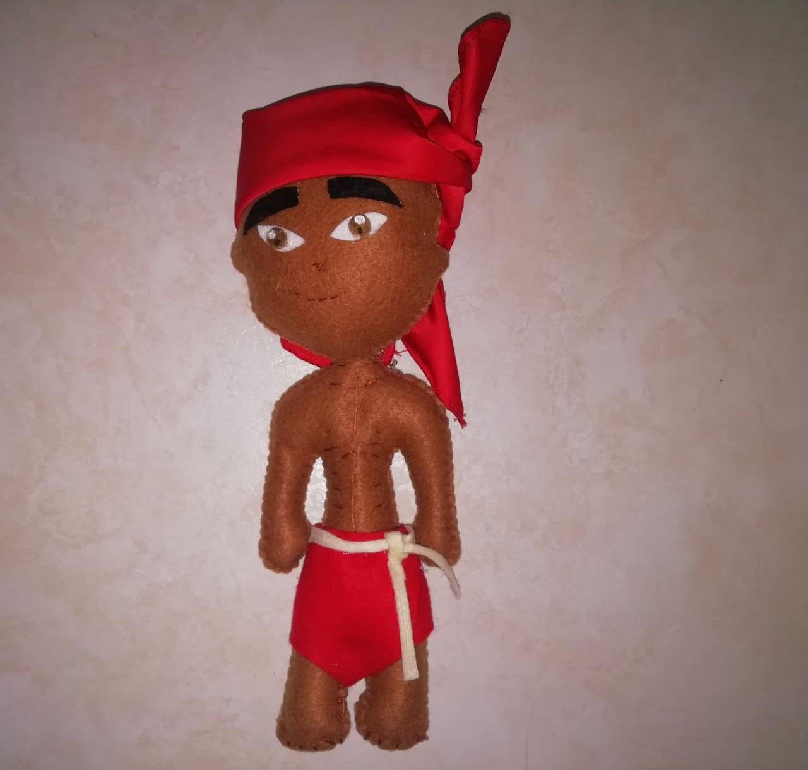
La madre del monte
Ella es la hermosa cuidadora de las selvas y la naturaleza, nuestra heroína mitológica, capaz de convertirse en toda una bestia con tal de proteger nuestro entorno.
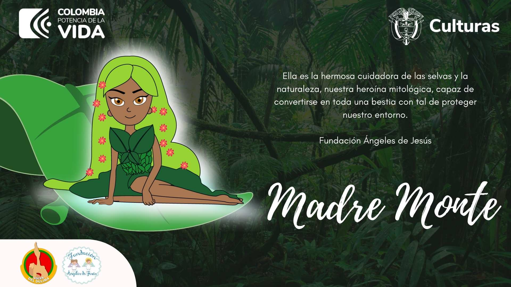

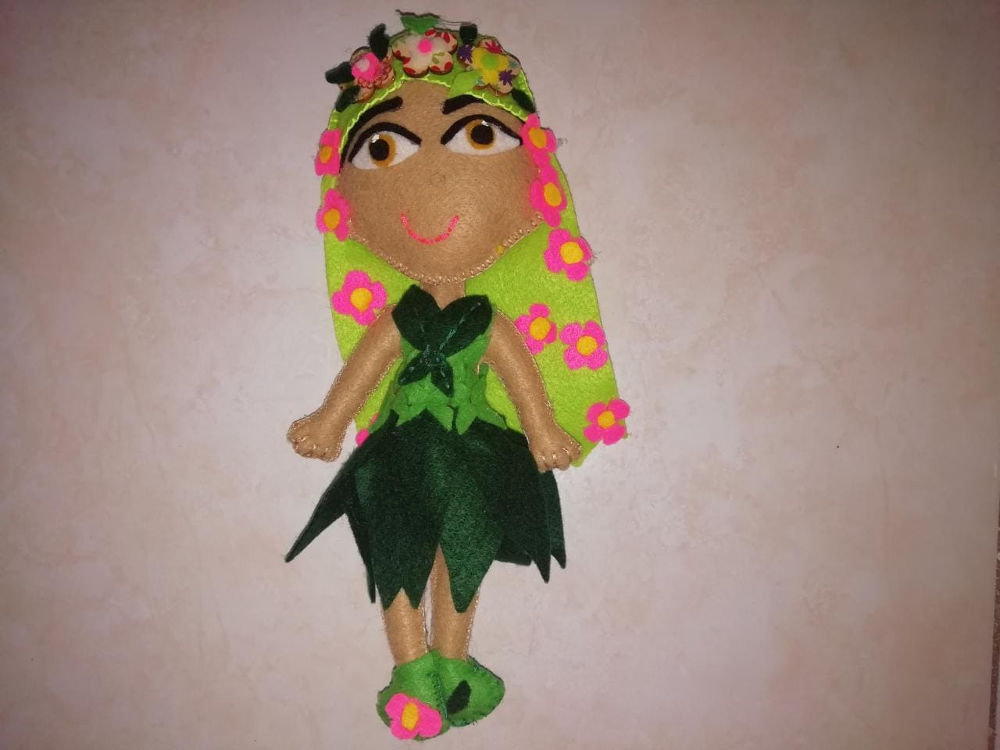
Un ave que canta tres pies
Cuentan que en las tierras del Tolima hay aves que anuncian con anticipación la muerte de un conocido. Ven con nosotros y conoce la historia de esta mítica ave, también conocida como el tres pies.
Protectores de tesoros
¿Cuidas tus tesoros? Sin duda alguna nuestros indígenas fueron expertos cuidando sus más sagrados tesoros, encargándolos a un muñeco de oro, muy conocido como tunjo.
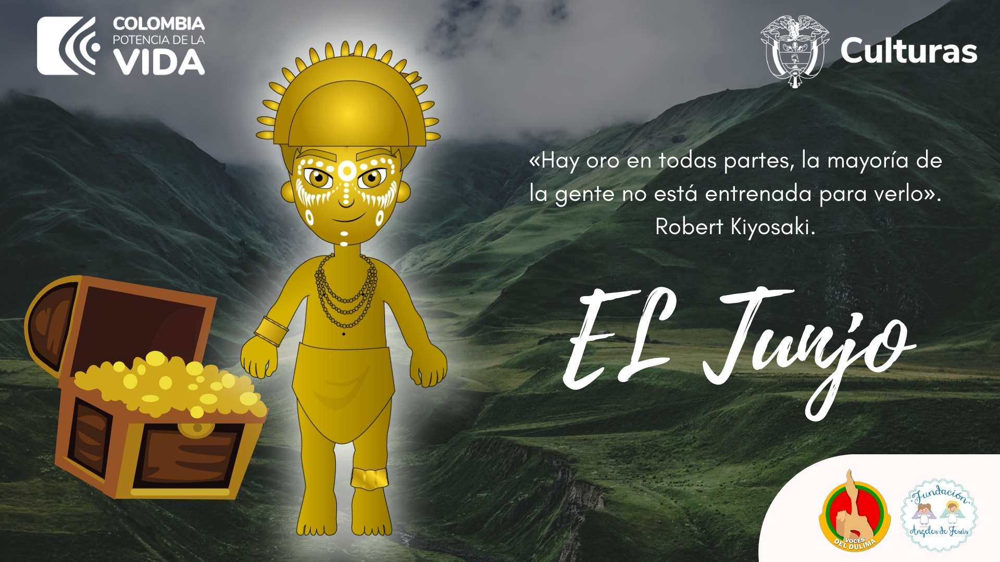

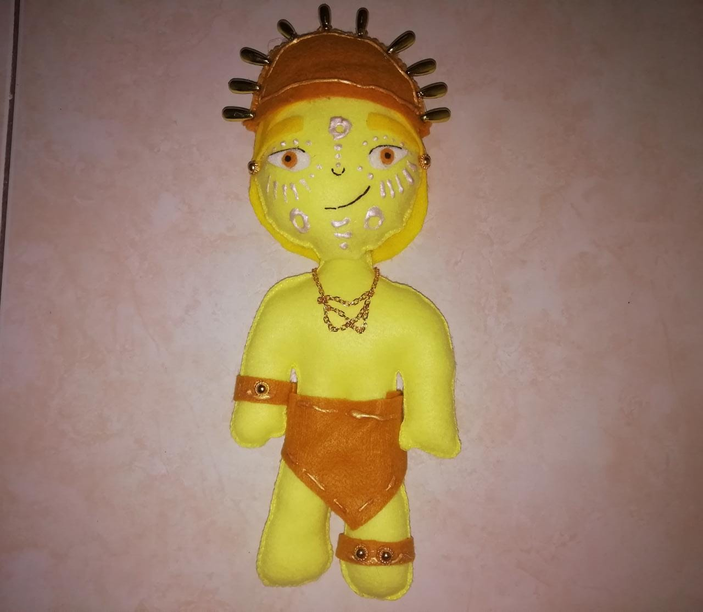
Caciqa del pueblo
Digna representante de la mujer tolimense fuerte y valiente, líder espiritual del pueblo y guardiana de conocimientos.
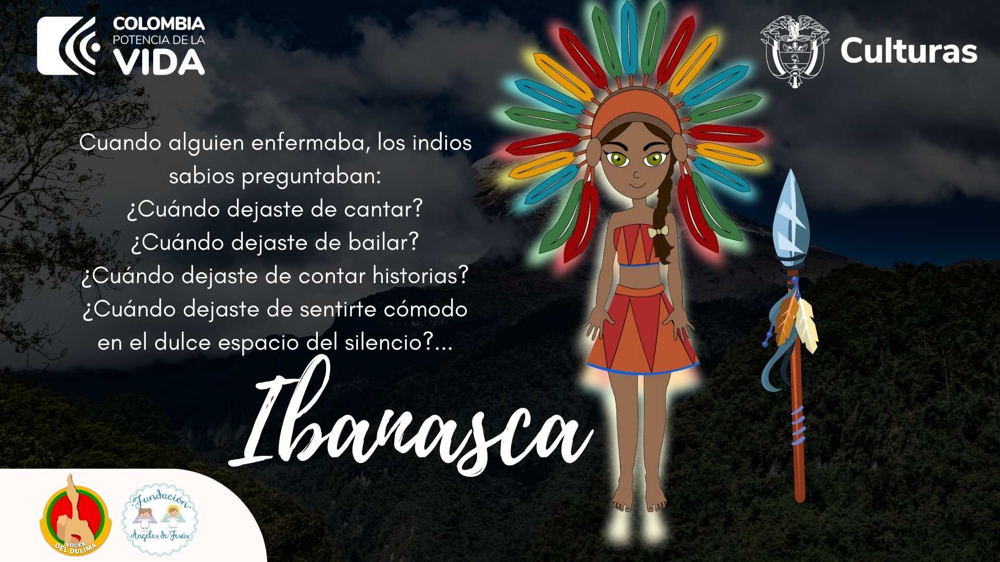

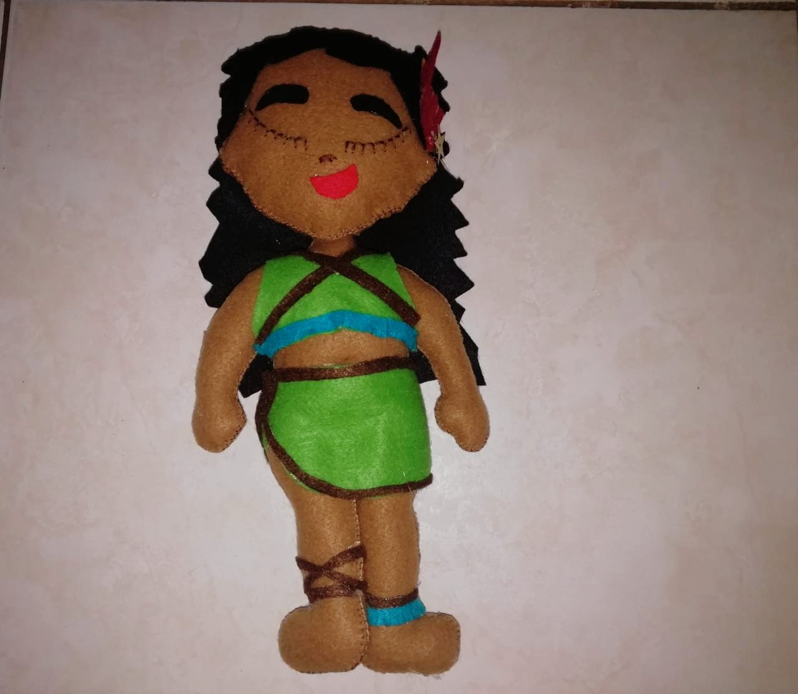
Ejemplo de conversión
Un hombre lleno de valentía y sabiduría, dispuesto a acoger nuevas creencias que beneficiarían y traerían nuevas riquezads a su comunidad.
Eterna búsqueda
Una mujer adelantada a sus tiempos, y dispuesta a tratar a todos por igual, pero que ahora se encuentra en una eterna búsqueda por su hijo.
Vigilante de rectitud
Las abuelitas deben ser permisivas y amorosas, pero también deben entender la importancia de enseñar a su comunidad a ir por el camino del bien.
Entre dos bandos
Un pueblo construido con amor y mucho sacrificio, que un día vivió en carne propia el horror del conflicto armado en Colombia.
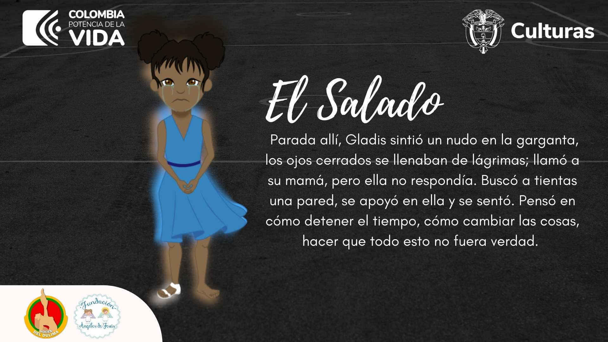
Sonrisa eterna
Hacer reír no es para cualquiera, ahora, hacer reír y con ello abrir los ojos de un país es algo reservado para una persona especial.
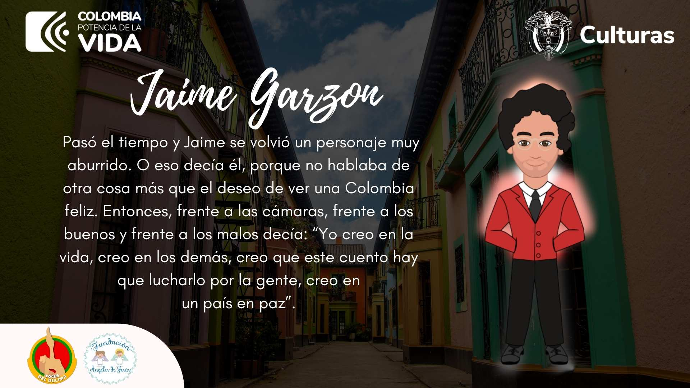
La mayor de las espías
Que los espías solo son hombres, venga y entérese de una historia que lo hará pensar en que una mujer puede ser mucho mejor en este campo.
La libertadora
Una mujer tenaz y decidida, que logró cada una de las cosas que se propuso y jugó un papel clave en la vida de la recién nacida Colombia.
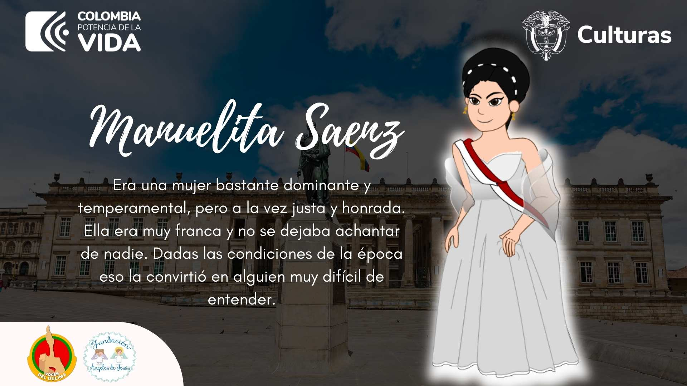
En busca de la paz
No existe pérdida más dolorosa que la de un hijo, sin embargo, la lucha de estas mujeres por la verdad ayudó a esclarecer crímenes sin nombre en nuestro país.
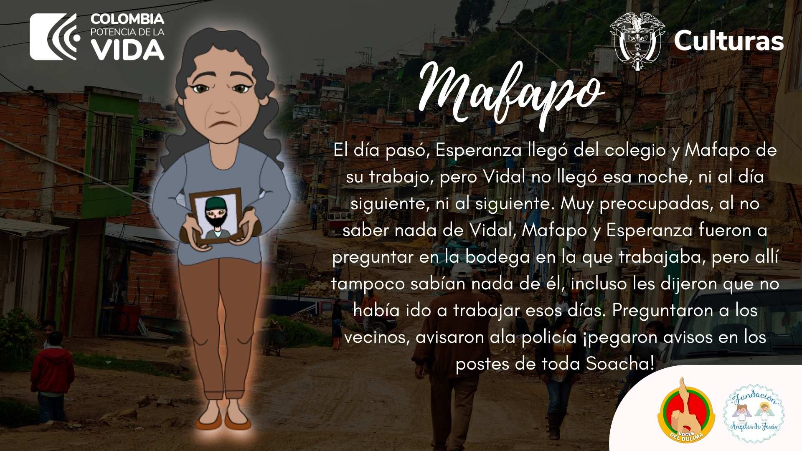
Una bandera blanca
Conoce de primera mano cómo aparecen discordias y malos entendidos, pero a la vez, cómo se logran superar obstáculos para esperar un mejor mañana.
La palma más grande del mundo
El hogar de los loros orejiamarillos, ubicada a la ladera fría de los Andes Colombianas, el árbol nacional de Colombia, la Palma de Cera.
Las orejas amarillas
Una especie que estuvo en peligro critico de extinción, ahora aunque sigue en peligro, ha ganado defensores, su población logró renacer en el municipio de Roncesvalles, Tolima.
Gonza, un legado
Un guardabosques que dedicó su vida evitar la extinción del loro orejiamarillo, educando y reconciliando al ser humano con la naturaleza.
Proyectos
If you can’t decide, the answer is no. If two equally difficult paths, choose the one more painful in the short term (pain avoidance is creating an illusion of equality).
Voces del Dulima.
Rather than worrying about switching offices every couple years, you can instead stay in the same location and grow-up from your shared coworking space to an office that takes up an entire floor.
Voces del Dulima.
Rather than worrying about switching offices every couple years, you can instead stay in the same location and grow-up from your shared coworking space to an office that takes up an entire floor.
Voces del Dulima.
Rather than worrying about switching offices every couple years, you can instead stay in the same location and grow-up from your shared coworking space to an office that takes up an entire floor.
K-Ser.
Rather than worrying about switching offices every couple years, you can instead stay in the same location and grow-up from your shared coworking space to an office that takes up an entire floor.